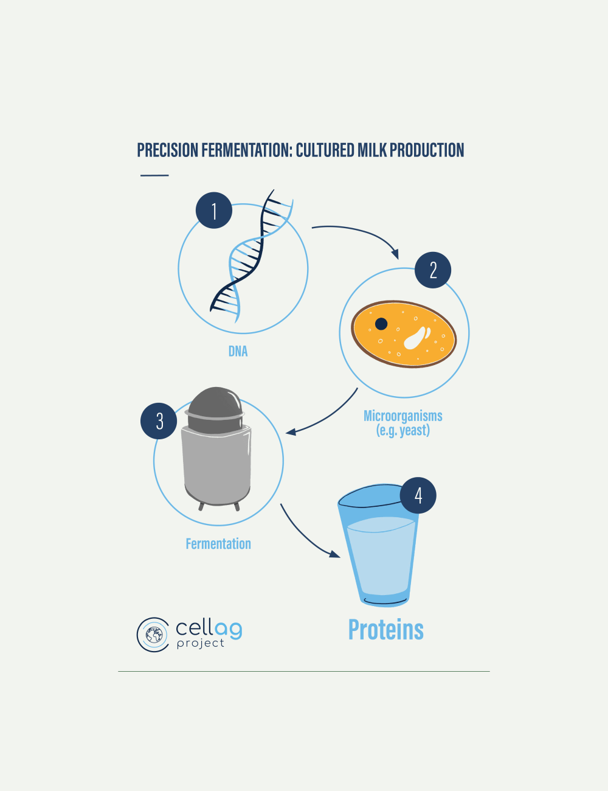
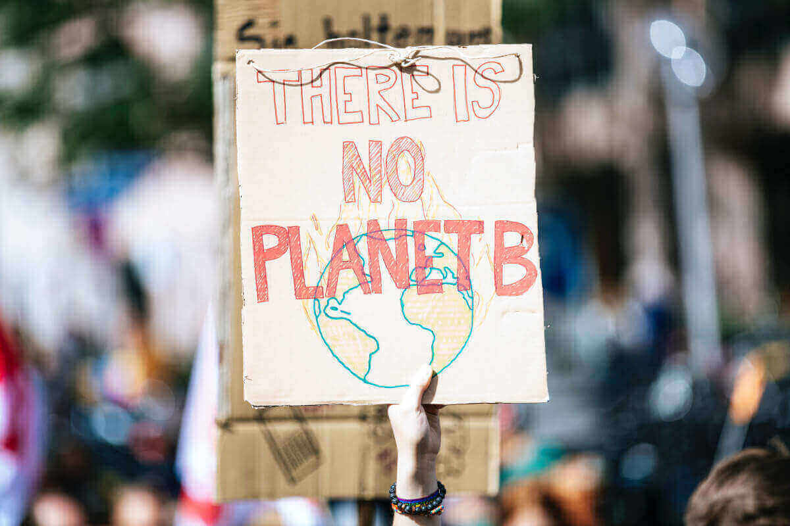
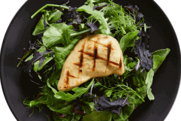

English | Italiano | Français | Español | Deutsch | 中文 | 日本語 | Bahasa Indonesia | Português | Русский
精确发酵
精确发酵法可利用酵母或真菌等微生物代替动物生产牛奶和鸡蛋蛋白及其他配料
与养殖肉和植物肉一样，发酵产生的蛋白质对地球、人类和动物都更有益
精准发酵可以减少我们对工业化奶牛养殖的依赖，以及这种养殖方式对气候、环境和动物的影响。
English | Italiano | Français | Español | Deutsch | 中文 | 日本語 | Bahasa Indonesia | Português | Русский
精确发酵法可利用酵母或真菌等微生物代替动物生产牛奶和鸡蛋蛋白及其他配料
与养殖肉和植物肉一样，发酵产生的蛋白质对地球、人类和动物都更有益
精准发酵可以减少我们对工业化奶牛养殖的依赖，以及这种养殖方式对气候、环境和动物的影响。

所产生的蛋白质与传统生产的动物蛋白质相同，可用于制造各种产品（奶酪、冰淇淋、牛奶、黄油、蛋白粉、白蛋白等）。
转基因微生物菌株的使用并不新鲜，几十年来，它一直被用于医药和食品领域，以生产......：
此外，还有许多传统发酵食品：
豆豉、啤酒、酸奶、泡菜、酸菜和其他许多食品

"第二次驯化"
我们首先驯化了大型生物（动物和植物）。
现在，我们开始驯化微生物。
从养殖多细胞生物发展到养殖单细胞生物
让我们可以用更少的资源做更多的事情。
工业化畜牧业是气候变化的主要原因：工业化畜牧业排放的温室气体占总排放量的 14% 至 51%，比整个交通运输业的排放量还要多
工业化畜牧业也是我们面临的最紧迫环境问题的主要原因：

喂一只鸡需要9 卡路里，才能吃到 1 卡路里的肉
也就是说，每卡路里的土地、水、资源是植物蛋白的 9 倍。猪肉和牛羊肉的资源浪费更为严重
77% 的农业用地被用来喂养动物以生产肉类，但这些肉类只能提供人类30% 的蛋白质和 18% 的热量
畜牧业消耗 29% 的农业用水，泥浆污染地下水储备
到 2050 年，肉类需求预计将翻一番。仅靠一个星球的动物蛋白无法养活不断增长的世界人口

70% 的抗生素用于农场动物
75%的传染病源于人畜共患病
下一次大流行很可能是由动物剥削引起的，就像科维德-19一样

不含乳制品和其他精密发酵产品：

每年有750 亿只农场动物 （鸡、猪、牛等）和2.7 万亿只海洋动物 被杀死，以生产肉类、奶制品、鱼和鸡蛋
这 4 项主要技术将决定粮食生产的未来：
以微生物为基础，利用酵母和真菌生产蛋白质和其他成分（脂肪、染料等）。

以真菌菌丝体为基础，可在短时间内生产出营养价值极高的菌体蛋白。例如昆恩

以细胞为基础，利用在生物反应器中繁殖的动物细胞，生产与动物等同的生物肉类和鱼类

纯天然蛋白质，由非转基因微生物生产，以水和空气（氢、氧、氮、碳）为原料
"这将是自农业发明以来对粮食系统的最大破坏"
这些产品包括利用细胞培养、精准发酵或生物质发酵生产的食品。


2026年上半年，精准发酵企业融资1亿欧元，超过2025全年9700万欧元。培育肉企业融资1800万欧元，包括宠物食品。 来源: gfieurope.org, gfieurope.org
欧洲企业获得的私人投资（百万欧元）。2026年仅包括1月至6月；全年和半年数据不能直接比较。
2020至2025年，欧洲资助方为替代蛋白研究投入13亿欧元：29%用于发酵，9%用于培育肉和水产品。荷兰政府为涵盖两种技术的项目拨款6000万欧元。 来源: gfieurope.org, cellulaireagricultuur.nl
达能及合作伙伴于2026年在法国启用共享发酵扩产设施，投资超过2000万欧元。Bel和Standing Ovation宣布实现工业规模酪蛋白生产；达能创投与Bel参与其3000万欧元融资。 来源: danone.com, groupe-bel.com, standing-ovation.co
恒天然支持的Vivici在2025年融资3250万欧元，并在2026年获得1250万欧元欧盟融资。截至2026年10月，其计划中的美国生产合作伙伴仍需资金才能投产。 来源: invest-nl.nl, agfundernews.com, agfundernews.com
肉类企业JBS宣布1亿美元计划，包括西班牙BioTech Foods、工厂和巴西研究中心。研究中心于2026年启用；西班牙工厂是否运营尚未确认。泰森支持的Believer Meats建成设施后停止运营。 来源: api.mziq.com, cnnbrasil.com.br, ag.ingredion.com
中国在2021–2025年农业科技发展规划中纳入培育肉及相关技术。联合国粮农组织估计，2021年中国占全球水生动物食品表观消费量的36%。 2021年发表的一项估计显示，中国占全球肉类消费量的28%。 TIME. 来源: nyncj.cngy.gov.cn, digitallibrary.un.org
精准发酵和培育肉有潜力应对食品生产面临的挑战，但需要更多投资来推进研究、降低成本并扩大生产规模。
政府可以通过资助开放获取的研究、支持初创企业以及建设共享设施，帮助新产品更容易进入市场。分享知识和鼓励合作，可以帮助更多研究人员和企业取得进展。
清晰、以科学为依据的法规也至关重要，既能保障食品安全，也能为创新者提供可预期的市场准入途径。
替代蛋白有望同时应对气候变化、环境破坏和动物福利等多项挑战。公共和私人投资可以帮助将这一潜力转化为实用、容易获得的食品选择。
请呼吁您的民意代表支持公共研究和投资。


浏览 Good Food Institute 的全球替代蛋白企业目录。